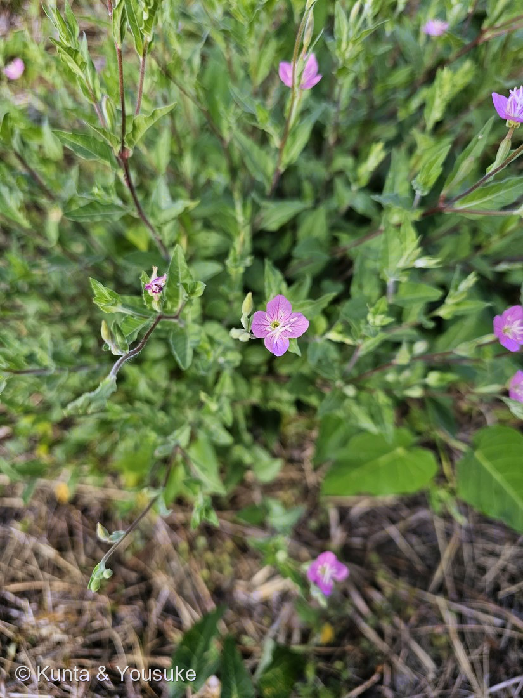
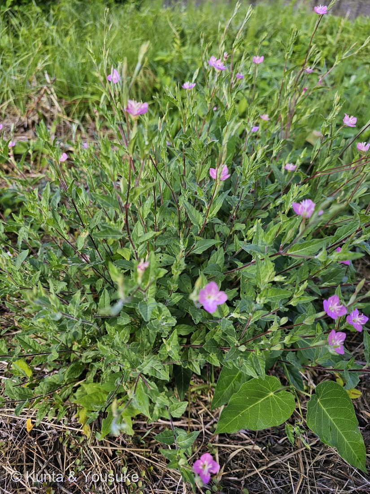

地図を読み込んでいるよ…
🔍 写真も地図も、押しているあいだ拡大して見られるよ（スマホは指を置いてすこし待ってね）。
🌍 の地図＝この子がもともと自生している場所を緑に。アメリカ大陸（北アメリカ＝アメリカ合衆国・メキシコ／中南米＝コスタリカ・グアテマラ・ボリビア・エクアドル・ペルー）。日本へは明治時代に観賞用として移入され、関東地方以西に野生化。
⭐アメリカ大陸の子だよ。⚠日本へは明治時代に観賞用として移入され、いまは関東地方以西に野生化——だから日本は塗っていない。⭐読めた出典が名前を挙げていた国だけを塗った（アメリカ合衆国・メキシコ・コスタリカ・グアテマラ・ボリビア・エクアドル・ペルー）。⚠実際にはこの間の国にも分布している可能性があるけれど、書いていない国は塗らないでおく。
⚠ 地図は国（日本と中国だけ県・省）までしか塗れないから、ほんとうの分布より広く見えていることがあるよ。地図はだいたいの場所。正確なところは、上の文を見てね。
アカバナユウゲショウ（赤花夕化粧）
Oenothera rosea L'Hér. ex Aiton
別名 · ユウゲショウ（夕化粧）／ 原産 · アメリカ大陸／ 見どころ · ⭐⭐花弁4・雄しべ8・柱頭が十字に4裂＝アカバナ科の「4」がぜんぶ見える花
アカバナ科 · Onagraceae（マツヨイグサ属 Oenothera・フトモモ目 Myrtales）── 081 メマツヨイグサと同じマツヨイグサ属
燻太さんの言葉「道路沿いの砂利道で花を咲かせていた、アカバナユウゲショウだよ。アカバナの仲間って、花弁が4枚なのが仲間の印なのかな？」……⭐その答えが、この写真の中にあった。
名前と学名の由来 ── ⚠ 名前が二重に、実物とずれている
- Oenothera（エノテラ）＝マツヨイグサ属。種小名 rosea（ロセア）＝「バラ色の」。──淡い紅色の花の、そのとおりの名前だね。
- ⚠⭐ずれ その1：「夕化粧」なのに、朝から咲いている。和名は「午後遅くに開花して、艶っぽい花色を持つことから」とされる。──でも実際には昼間でも開花した花を見られる。⭐燻太さんがこの花に会ったのは、朝7時59分だった（＝下の節）。
- ⚠⭐ずれ その2：「アカバナ」は、アカバナ科のことではない。⭐オシロイバナの通称「夕化粧」と紛らわしいので、区別のために「赤花」をつけて「アカバナユウゲショウ」と呼ぶんだ。──たまたまアカバナ科でもあるので、ややこしい。（オシロイバナは012 アサガオのおまけで出てきた子。）
- ⭐081 メマツヨイグサと同じマツヨイグサ属＝図鑑で同属2人目。あちらは「宵を待って咲く」黄色い花で、ほんとうに夕方に開く。同じ属で、名前も「夕」と「宵」なのに、こちらは名前を守っていない。
この植物のこと
- アメリカ大陸原産の多年草。明治時代に観賞用として移入され、いまは関東地方以西に野生化して、道端や空き地でもよく見かける。⚠ただし「帰化した範囲は広いが個体数は少ないといわれる」とも書かれているよ。
- 草丈は低く、茎は傾伏または斜上して、白い伏毛がある。葉は互生し、根生葉はへら形、茎葉は長さ1.5〜4cmの披針形で、縁に波状の鋸歯。──写真②の、赤みを帯びた茎がななめに広がるすがたが、まさにそれ。
- 花は淡紅色〜紅紫色、直径1〜1.5cm、花弁は4個で長さ5〜10mm。花期は5〜10月。
- 蒴果は長さ8〜12mm・幅3〜4mmの棍棒状で8稜があり、熟すと先端が4裂する。⚠まだ実は見ていない＝これから探そう。
同定について
- 決め手はぜんぶ写真①にそろっていた：花弁4枚／紅色の脈／中心が黄緑色／柱頭が十字に4裂／雄しべ8／直径1〜1.5cmの小さな花。
- 茎が赤みを帯びて斜上し、葉は披針形で波状の鋸歯（写真②）。道路沿いの砂利地に群生という場所も、この子らしいところ。
- ⚠似た子との区別：同属のヒルザキツキミソウ（Oenothera speciosa）も昼咲きの淡紅色だけれど、花がずっと大きい（直径5cmほど）。この子は1〜1.5cmだから、大きさで分かれる。
- ⚠柱頭の色は、正直に書いておく。出典には「紅色で4裂する」とあるけれど、写真では白〜淡いピンクに写っている。⭐形（4裂）は完全に一致。色は光の加減か個体差かもしれないので、そこは断定しないね。
⭐⭐⭐ 燻太さんの問い ──「花弁が4枚なのが、仲間の印なのかな？」
- ⭐⭐答え：かなり当たっている。でも「印」というより「基本形」で、はっきりした例外がいる。
- ⭐アカバナ科は「4数性」でまとまっている。そして⭐⭐この一枚の写真に、それが全部写っていた：
・花弁 4
・雄しべ 8（＝萼片の2倍・2輪）
・⭐⭐柱頭が4裂して、まん中で大きな十字（×）になっている
・（＋萼片4／子房下位／蒴果は熟すと先端が4裂） - 科の記載でも「Flowers mostly 4-merous, rarely 5-merous」「Ovary inferior」「Stamens 4, 5, 8, or 10, in 2 whorls」＝たいてい4数、まれに5数という書きぶりなんだ。
- ⚠⭐でも、例外がいる。ミズタマソウ属（Circaea）は「2数性」＝「Flowers are dimerous with 2 sepals, 2 petals, and 2 stamens」。萼2・花弁2・雄しべ2。日本の山地の林内にいるミズタマソウ（この子のおまけ）がそれ。⭐しかも花弁の先が2裂するので、ぱっと見は4枚に見える——「2でできているのに、4に見える」んだ。
- → ⭐だから「4枚ならアカバナ科の可能性が高い」は言える。でも「4枚じゃないからアカバナ科じゃない」は言えない。⚠087 ヤマモモで決めた「その形質は、他を落とせるか？」と、同じ考え方だね。
- ⭐⭐もっと「この科らしい」印なら、花粉のほうかもしれない。アカバナ科の花粉は、粘着糸（viscin threads）でゆるくつながっている。Most bees cannot collect it＝ふつうのハチには集められない。──糸でつながった花粉は、送粉者を選ぶ。⭐顕微鏡で見えるかもしれない＝宿題。
⭐ 朝7時59分に咲いていた ── 撮影時刻が、そのまま証拠になった
- ⭐この花の撮影時刻は 2026-07-28 07:59:23（写真②）と 07:59:26（写真①）。燻太さんの通勤のとちゅうだよ。
- ⭐⭐「夕化粧」という名前なのに、朝8時前に、たくさんの花が開いていた。──出典の「実際には昼間でも開花した花を見られる」を、写真の時刻がそのまま裏づけた。
- ⭐この図鑑では2回目：038 フヨウ（15:06でまだ純白）と039 スイフヨウ（12:56でもう淡ピンク）のときも、撮影時刻が決め手になった。⭐手元の情報を、最後まで使いきる。EXIFの時刻は、ただの記録じゃない。
- ⚠まだ確かめていないこと＝夕方の顔。⭐同じ株に夕方もういちど会いに行けば、「名前どおりの時間」も見られる（170 ムクゲの「朝と夕方の見くらべ」と同じ宿題だね）。
参考：三河の植物観察「ユウゲショウ」（Oenothera rosea L'Her. ex Ait.／アカバナ科マツヨイグサ属／北アメリカ（U.S.A、メキシコ）、南アメリカ（コスタリカ、グワテマラ、ボリビア、エクワドル、ペルー）原産で観賞用に輸入されたものが帰化／花は淡紅色〜紅紫色、直径1〜1.5cm／花弁は4個、長さ5〜10mm／柱頭4個／茎は傾伏又は斜上し白色の伏毛がある／葉は互生し根生葉はへら形、茎葉は長さ1.5〜4cmの披針形で先が尖り縁に波状の鋸歯／蒴果は長さ（4）8〜12mm、幅3〜4mmの棍棒状、8稜があり熟すと先端が4裂する／花期5〜10月）／Wikipedia「ユウゲショウ」（和名は午後遅くに開花して艶っぽい花色を持つことからとされるが、実際には昼間でも開花した花を見られる／オシロイバナの通称と紛らわしいのでアカバナユウゲショウ（赤花夕化粧）と呼ぶこともある／アメリカ大陸原産で明治時代に観賞用として移入／関東地方以西に野生化しており道端や空き地でもよく見かける／帰化した範囲は広いが個体数は少ないといわれる／花弁は4枚で紅色の脈があり中心部は黄緑色／柱頭は紅色で4裂する／花期は夏から秋（5月から9月））／Flora Malesiana「Onagraceae」（Flowers mostly 4-merous, rarely 5-merous／Ovary inferior／Stamens 4, 5, 8, or 10, in 2 whorls／About 17 genera and more than 600 spp.）／Wikipedia「Onagraceae」（usually four sepals and petals／pollen grains in many genera are loosely held together by viscin threads／Most bees cannot collect it／about 650 species of herbs, shrubs, and trees in 17 genera）／Wikipedia「Circaea」（belongs to the evening primrose family Onagraceae／Flowers are dimerous with 2 sepals, 2 petals, and 2 stamens／commonly called enchanter's nightshades）／三河の植物観察「ミズタマソウ」（Circaea mollis Sieb. et Zucc.／アカバナ科ミズタマソウ属／花弁は白色、2個、先が2裂し1/4〜1/2まで切れ込む／萼片は緑色、無毛、2個／雄しべ2個／花期は8〜9月／山地の林内に生える／和名は小さな丸い果実に白色の毛がつき水玉のように見えることから／高さ25〜60cm）